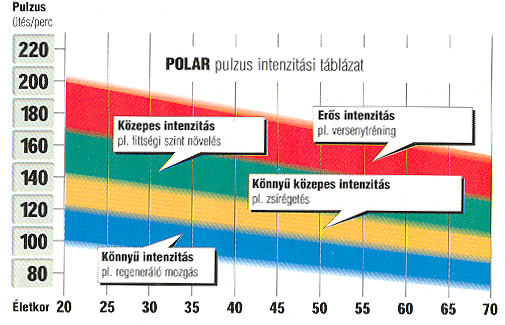

A pulzus egy megbízható mutatója az edzés intenzitásának. Edzés, mozgás alatt a pulzusszám a normális alap-pulzusszám fölé emelkedik. A különböző intenzitású edzéseknek más-más hatása van az egészségi, valamint a fittségi állapotra. Az alacsonyabb intenzitásnak több egészségügyi hatása van és főleg a kezdőknek, túlsúlyosoknak ajánlott. A közepes intenzitás az állóképességet fejleszti, míg a magas intenzitás rendszeres sportolóknak javasolt. A pulzusod mutatja a szíved terhelését, a szív pedig azonnal reagál a tested megterheléseire, a környezeti hatásokra, valamint a lelki állapotodra. Ma már pulzusmérős karórák EKG pontossággal ellenőrzik a szíved terhelését, valamint számos a sportoláshoz szükséges kiegészítő funkcióval rendelkeznek. A pulzusszám az egyik legérzékenyebb mutatója a szervezetünk fizikai terhelésének. Terhelés közben mért pulzusunk fontos információval szolgál az adott terhelés intenzitásáról, testünk pillanatnyi állapotáról, sőt hosszabb távon vizsgálva az adatokat az edzésmunkával elért fejlődésnek is jó mutatójává válik. Pulzusunk nyomon követése segíthet például edzés során a megfelelő tempó belövésében, vagy hosszabb versenyeken az egyenletes tempómegtartásában még akkor is, ha rafinált versenyszervezők pontatlanul elhelyezett km jelzésekkel igyekeznek összezavarni minket. Ahhoz, hogy pulzusszámunkat hatékonyan tudjuk használni edzésmunkánkban, meg kell határoznunk néhány alapvető pulzusértékünket: a maximális pulzust, a nyugalmi pulzust, valamint az edzésmunkához, céljainkhoz használható pulzustartományokat, majd ezen adatokat be kell építenünk edzésmunkánkba. A maximális pulzus meghatározására több lehetőség van. Az igazán korrekt, szakorvos által végzett laktat (tejsavsó) teszt, de mérmegmérhetjük magunk is, sőt ki is számolhatjuk.

A maximális pulzusszám 50-60% közötti zóna, mely bemelegítésre és nehezebb edzés utáni regenerálódásra szolgáló tartomány.
Ezt a terhelést alkalmazzák rehabilitációs edzéseknél és rossz kondícióban lévő személyek erősítésénél is.
A maximális pulzusszám 60-70% közötti zóna, mely az állóképesség megszerzéséhez szükséges, valamint fogyásra, testsúly konrollra, szabályozásra szolgáló pulzus tartomány, ha az időtartama 40-80 perc.
70-80%-os zónában (10-40 percig) végzett edzés javítja a keringést kedvezően hat a szívre és tüdőre, növeli az aerob állóképességet és megalapozza a magasabb intenzitású edzéseket.
80-90%-os (egy-egy intervallumban 2-10 percig) a kemény edzés zónája. Javítja az anaerob toleranciát, vagyis az izmokba a tejsavó leépítés gyorsaságát, és fejleszti a gyorsasági állóképességet, a robbanékonyságot. Aki csak fitt akar lenni annak nem kell ebben a zónában edzeni!
90-100%-os. Ebben a zónában a szervezet több oxigént használ fel mint ami a test számára rendelkezésre áll. Magyarul egy oxigén deficittel edzünk! Az anyagcsere funkciók trenírozása mellet fejleszti robbanékonyságot. Az erre a zónára nem edzett szervezet a test szükség energiáját mozgósítja, nem a zsír készleteket használja fel hanem a gyorsabban felhasználható cukor készleteket. Mivel a test cukor készletei nem olyan nagyok mint a zsír készletek, gyors és erős kimerülés az eredmény. Egy-egy intervallumban max. csak 2 percig legyünk ebben a zónában.